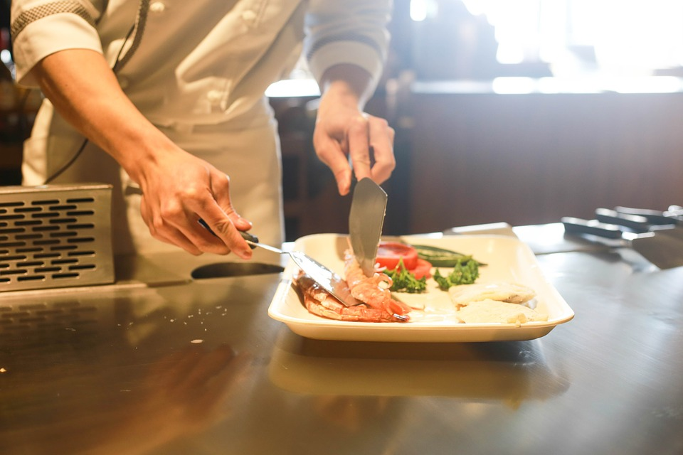
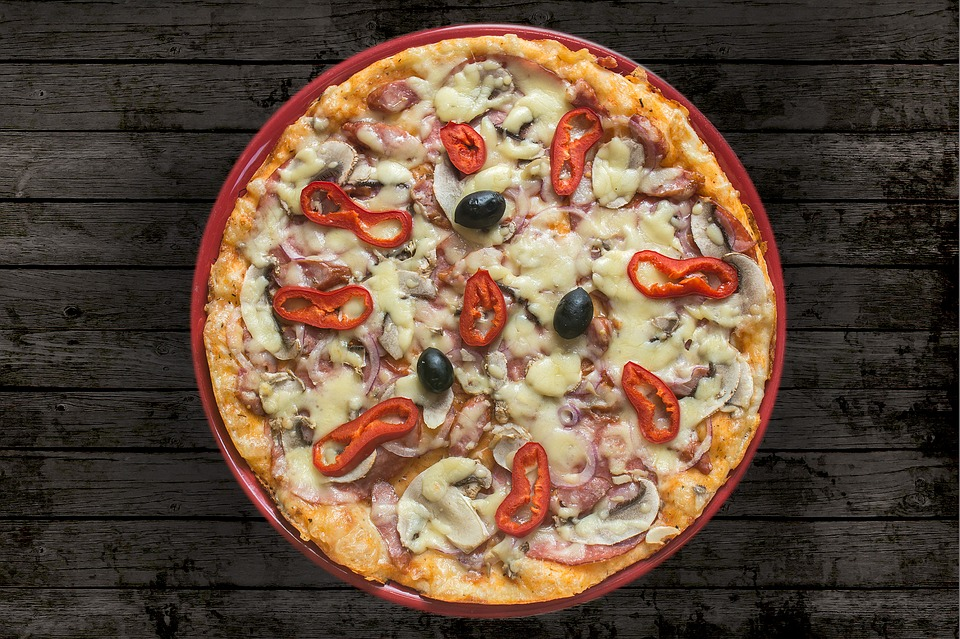
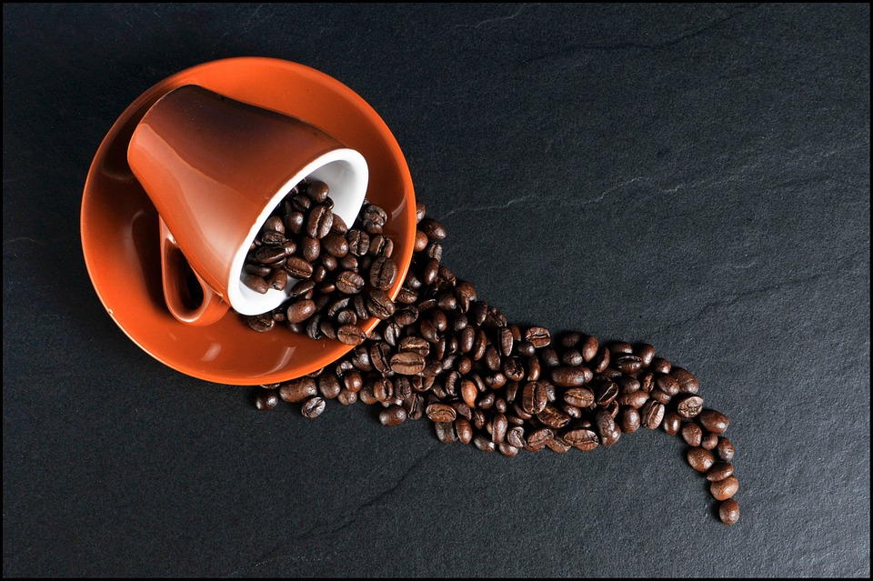
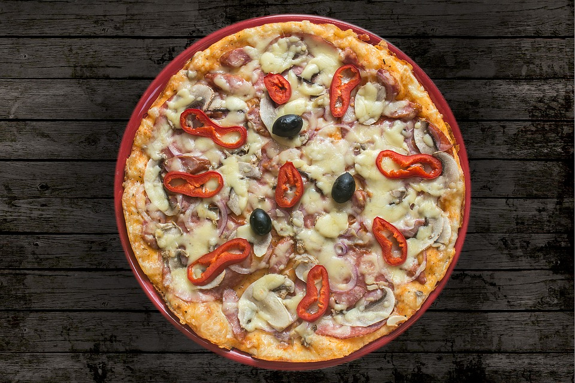
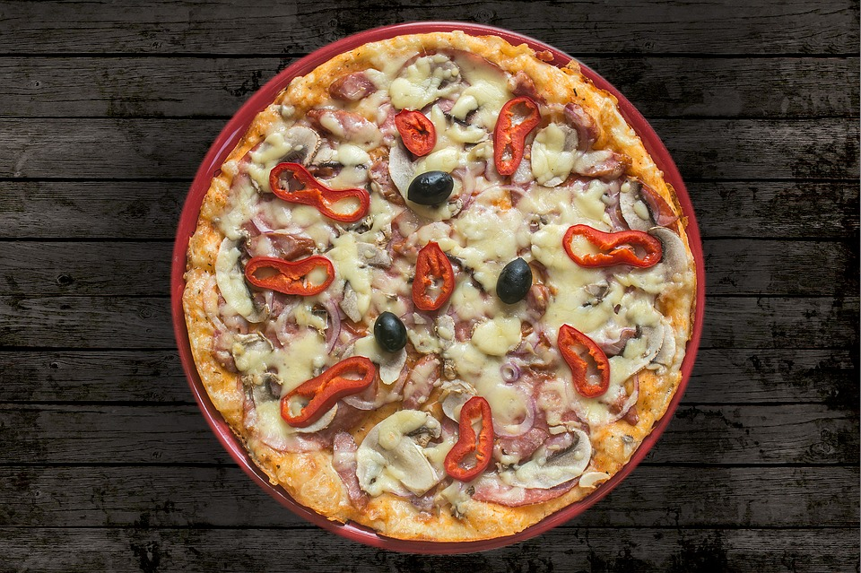

Sounds simple but a perfect, runny yolk can be lost in a moment, so timing is key. The duration of a boil depends on how firm you want the eggs to be, but it’s always best to start with them at room temperature to avoid undercooking. For a soft-boiled egg, bring a pan of water to the boil, gently lower the egg into it with a spoon and cook for three to five minutes.
Our Gallery


Our Chef
Blog

02
JAN
How To Make A Coffee !
Coffee is a brewed drink prepared from roasted coffee beans, the seeds of berries from certain Coffee species. The genus Coffee is native to tropical Africa (specifically having its origin in Ethiopia and Sudan) and Madagascar, the Comoros, Mauritius, and Reunion in the Indian Ocean. Coffee plants are now cultivated in over 70 countries, primarily in the equatorial regions of the Americas, Southeast Asia, Indian subcontinent, and Africa. The two most commonly grown are C. arabica and C. robusta. Once ripe, coffee berries are picked, processed, and dried. Dried coffee seeds (referred to as "beans") are roasted to varying degrees, depending on the desired flavor. Roasted beans are ground and then brewed with near-boiling water to produce the beverage known as coffee. Coffee is darkly colored, bitter, slightly acidic and has a stimulating effect in humans, primarily due to its caffeine content. It is one of the most popular drinks in the world, and it can be prepared and presented in a variety of ways (e.g., espresso, French press, café latte). It is usually served hot, although iced coffee is a popular alternative. Clinical studies indicate that moderate coffee consumption is benign or mildly beneficial in healthy adults, with continuing research on whether long-term consumption lowers the risk of some diseases, although those long-term studies are of generally poor quality
05
JAN
Pizza At Home !
Pizza is a savory dish of Italian origin, consisting of a usually round, flattened base of leavened wheat-based dough topped with tomatoes, cheese, and various other ingredients (anchovies, olives, meat, etc.) baked at a high temperature, traditionally in a wood-fired oven. In formal settings, like a restaurant, pizza is eaten with knife and fork, but in casual settings it is cut into wedges to be eaten while held in the hand. Small pizzas are sometimes called pesetas. The term pizza was first recorded in the 10th century in a Latin manuscript from the Southern Italian town of Gaeta in Lazio, on the border with Campania. Modern pizza was invented in Naples, and the dish and its variants have since become popular in many countries. It has become one of the most popular foods in the world and a common fast food item in Europe and North America, available at pizzerias (restaurants specializing in pizza), restaurants offering Mediterranean cuisine, and via pizza delivery. Many companies sell ready-baked frozen pizzas to be reheated in an ordinary home oven.

 
